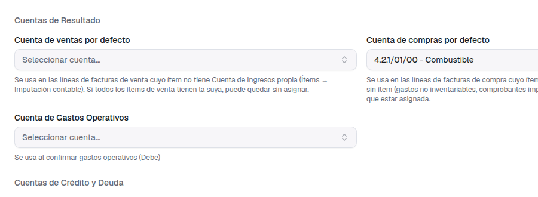
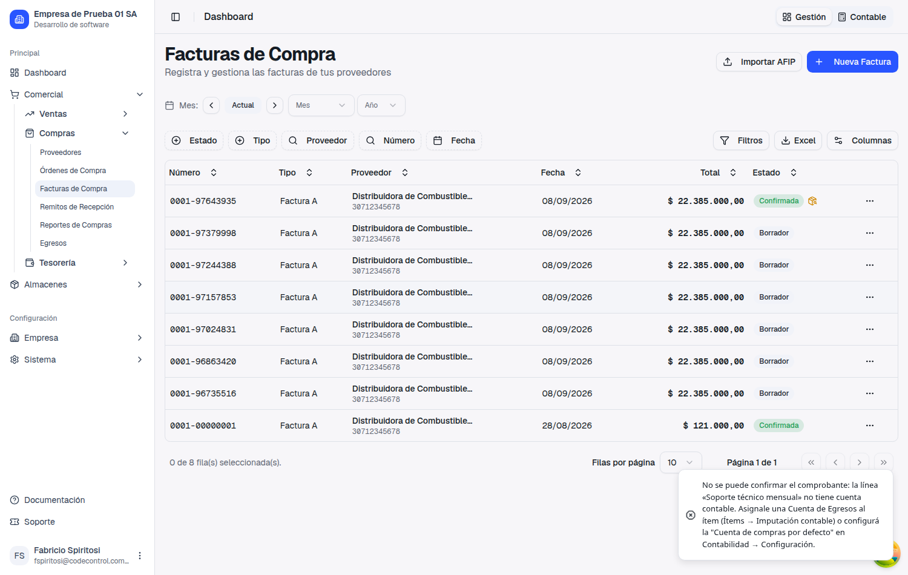
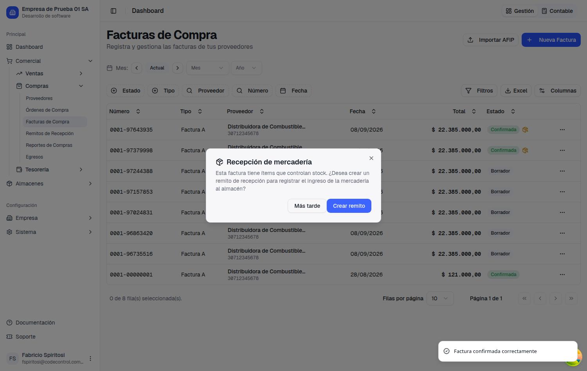
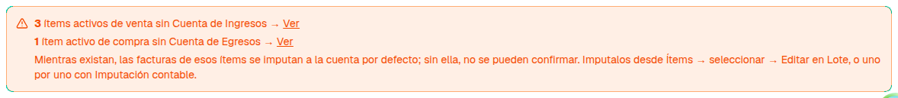
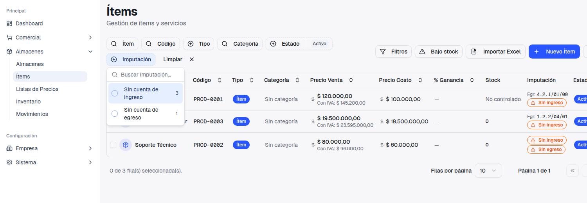
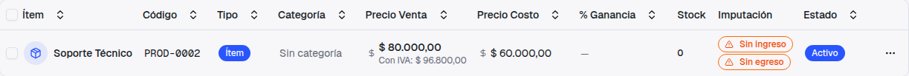
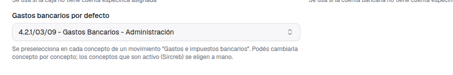
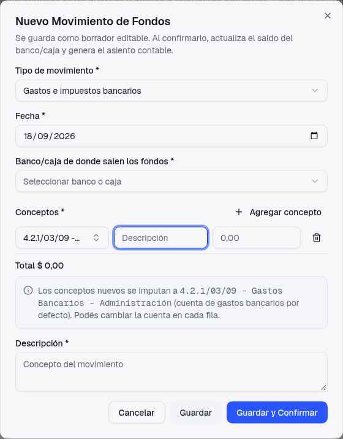

Guía de presentación — qué pediste, qué cambió, y un cambio de comportamiento que conviene leer con calma
En la reunión del 16 y 17 de septiembre dejaste tres tareas que, vistas juntas, dicen lo mismo desde tres lados: la cuenta contable de una venta o de una compra no puede ser una sola para toda la empresa, tiene que salir del ítem.
Qué pasaba. En Contabilidad → Configuración había dos campos que se llamaban Cuenta de Ventas y Cuenta de Compras, con una ayuda que decía "se usa al confirmar facturas de venta". Leído así, parecía que todas las ventas iban a esa cuenta. En realidad el asiento ya miraba primero la cuenta del ítem; el problema era que la pantalla no lo decía, que el sistema te exigía igual esas cuentas globales, y —esto es lo más importante, lo contamos en el punto 3— que cuando faltaba una cuenta la factura se confirmaba igual sin generar el asiento y nadie se enteraba. Para gastos bancarios, además, no había ninguna cuenta por defecto: cada concepto había que imputarlo a mano.
Cuenta de Ventas y Cuenta de Compras, presentadas como si fueran la cuenta de todo. Sin aviso de cuántos ítems no tenían la suya. Si faltaba una cuenta al confirmar, la factura pasaba igual, sin asiento y sin mensaje.
Cuenta de ventas por defecto y Cuenta de compras por defecto. La cuenta de cada línea de la factura es la del ítem (su Cuenta de Ingresos o de Egresos); la de configuración se usa solo para los ítems que no tienen la suya. Si no hay ninguna de las dos, la factura no se confirma y el sistema te dice qué línea y dónde arreglarlo.

La regla, en una línea: ítem → cuenta por defecto → si no hay ninguna, no se confirma. Y en compras, una línea sin ítem solo puede ir a la cuenta por defecto, porque no hay ítem del que sacar otra.
Esto es un cambio de comportamiento, no solo un cambio de nombres, y por eso lo separamos.
Hasta ahora, si confirmabas una factura con un ítem sin cuenta contable y la cuenta global estaba vacía, la factura quedaba Confirmada, movía stock y saldo con el cliente o proveedor, pero no generaba asiento. No había error ni aviso: el sistema lo anotaba en un registro interno y seguía. Contablemente, esa factura no existía.
Desde esta entrega, esa misma factura no se confirma. Queda en Borrador y aparece un mensaje que te nombra la línea y te dice dónde resolverlo: en el ítem (Ítems → Imputación contable) o en la cuenta por defecto (Contabilidad → Configuración). Lo mismo pasa si la cuenta del ítem está dada de baja, si falta la cuenta de IVA o si el período contable está cerrado: o la factura se confirma con su asiento completo, o no se confirma y te dice por qué.


Es posible que alguna factura que antes "pasaba" ahora se frene al confirmar. Eso es correcto: antes pasaba sin asiento. Cuando te aparezca el mensaje, no hay nada roto: leé qué línea nombra, asignale la cuenta al ítem (o completá la cuenta por defecto) y volvé a confirmar. Con la sección siguiente podés adelantarte y dejar los ítems imputados antes de que pase.
Si confirmás varias facturas a la vez, las que tienen algún problema quedan afuera con su motivo y las demás se confirman igual, como ya pasaba con los centros de costo.
Para que el punto anterior no te sorprenda, agregamos dos lugares donde ver de un vistazo qué ítems todavía no tienen su cuenta.



Lo que pediste en el 718. En Contabilidad → Configuración, dentro de Cuentas de Tesorería, hay un campo nuevo: Gastos bancarios por defecto.

Una vez configurada, cuando cargás un movimiento de fondos de tipo Gastos e impuestos bancarios, cada concepto que agregás ya nace con esa cuenta. Debajo de la tabla de conceptos, un aviso te recuerda cuál es. La podés cambiar en cada fila: si el resumen trae Sircreb, que es un activo (un crédito a tu favor) y no un gasto, ese concepto lo imputás a mano a su cuenta, como hasta ahora.

Nada se rompe: el mismo aviso se pone naranja, te dice que no hay cuenta por defecto y te deja un link a Ajustes contables. Mientras tanto elegís la cuenta concepto por concepto, exactamente como venías haciendo.
La cuenta por defecto solo propone: el asiento sigue usando la cuenta que quedó en cada concepto. Si la cambiás en una fila, esa fila va a la cuenta que elegiste. Cambiar la cuenta por defecto más adelante no toca los movimientos ya cargados.
Por el comportamiento viejo del punto 3, puede haber facturas de venta o de compra que figuran como Confirmadas pero nunca generaron asiento. Al poner en marcha esta entrega, nosotros revisamos la base y te avisamos si encontramos alguna, con el listado (número, fecha, tercero e importe). Qué hacer con ellas —generar el asiento con la fecha original, con la fecha de hoy, o asentarlas a mano— es una decisión contable que conviene tomar con tu contador; la resolvemos en un ticket aparte. Si no encontramos ninguna, también te lo decimos.
Mientras cargues facturas de compra sin ítem (un gasto suelto que tipeás como descripción) o importes comprobantes de AFIP, esas líneas no tienen de dónde sacar otra cuenta: usan siempre la de compras por defecto. Si la dejás vacía, esas facturas no se van a poder confirmar. Elegí una cuenta de gastos genérica —"Compras" o la que te indique tu contador— y dejala.
Si querés que todas las ventas vayan estrictamente a la cuenta de cada ítem, primero llevá a cero el aviso de "ítems de venta sin Cuenta de Ingresos" (punto 4) y después vaciá el campo. Si lo vaciás antes, las ventas de esos ítems se van a frenar hasta que los imputes.
Para aprovechar el punto 5, entrá a Contabilidad → Configuración → Cuentas de Tesorería y completá Gastos bancarios por defecto con la cuenta de gastos donde imputás comisiones e impuestos bancarios. Es opcional.